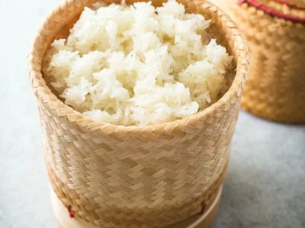

Sticky Rice
Home

Embrace the essential simplicity of Lao and Thai cuisine with Sticky Rice, known as 'Khao Niew', a dish that's as much a staple as it is a cultural icon. This glutinous marvel is the perfect accompaniment to your favorite Southeast Asian dishes, beloved for its chewy texture and slightly sweet taste. It's the ideal vessel for soaking up rich sauces and flavors from spicy salads, grilled meats, and curries. Unlike its jasmine counterpart, sticky rice is meant to be eaten with your hands, rolled into small balls and dipped into your dish of choice, making each meal a tactile experience.
Equipment
- Bamboo steamer or a steamer basket
- Large pot (if you don't have a steamer)
- Mixing bowl
- Measuring cup
- Cloth (for lining the steamer, if bamboo steamer is not used)
- Serving basket or dish
Ingredients
- 2 cups of glutinous (sticky) rice
- Water for soaking and steaming
Steps
- Soaking the Rice
- Start by rinsing the sticky rice in cold water to remove excess starch. Change the water a few times until it runs relatively clear.
- Soak the rice in enough water to cover it by an inch for at least 4 hours, or overnight. This step is crucial as it swells the grains to achieve the characteristic sticky texture.
- Preparing to Steam
- Once soaked, drain the rice in a colander. If you're using a bamboo steamer, you can place the rice directly in the steamer lined with cheesecloth. If using a standard steamer basket, line it with a clean, damp cloth before adding the rice to prevent the grains from falling through the holes.
- Steaming the Rice
- Fill your pot with water just below the bottom of the steamer basket. Bring the water to a boil.
- Place the rice-filled steamer over the pot of boiling water. Ensure the water does not touch the rice.
- Cover the steamer with its lid or with another cloth. Allow the rice to steam for about 15-20 minutes.
- Checking the Rice
- After the initial steaming, stir the rice so that the top layer is on the bottom. This ensures even cooking.
- Continue to steam the rice for another 15-20 minutes. The rice should be sticky but firm, not mushy.
- Serving the Rice
- Once the rice is cooked, turn it out into a serving basket or dish. The sticky rice will stay warm and can be covered with a cloth to keep it moist.
- Enjoying Your Sticky Rice
- To eat, take a small amount of rice with clean hands, roll it into a ball, and use it to scoop up mouthfuls of your accompanying dishes.
Tips and Traditions
- Sticky rice is traditionally served in a woven basket called a 'tip khao', which helps keep it warm and prevents it from drying out.
- You can flavor the rice by adding a pandan leaf or a few slices of ginger to the steaming water for a subtle aroma.
- Leftover sticky rice can be transformed into a sweet treat by mixing it with coconut milk and mango or making rice pudding.
Sticky rice is a delightful culinary encounter, its simplicity belying a depth of tradition and a central role in Lao and Thai food culture. It's the foundation of many meals, a comfort food that’s shared across tables, and an experience that ties together the communal spirit of eating. Whether you're savoring it with grilled meats slathered in spicy nam jim sauce or enjoying it as a sweet treat, sticky rice is an unforgettable part of Southeast Asian dining.